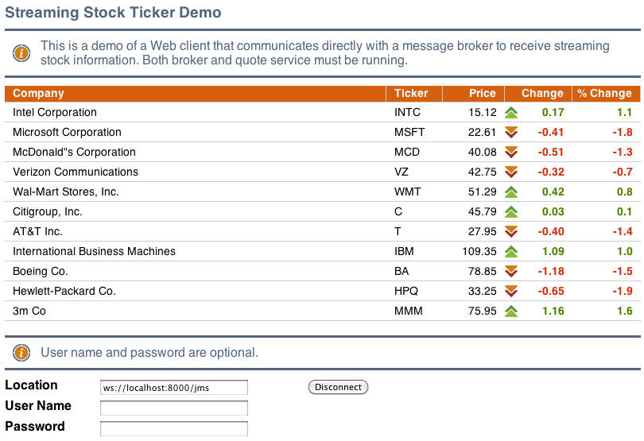

Use the Kaazing Gateway JavaScript JMS Client API
In this procedure, you will learn how to use the Kaazing Gateway JavaScript JMS Client API and the supported APIs. The steps in this section show you how to add the code to an existing JavaScript application and have it interact with a pre-seeded stock ticker. In this section, you'll use the out of the box ActiveMQ server and demo stock script. You can alternatively use your own JMS-compliant message broker.
Notes:- To find out more specific information about the supported APIs or to learn which APIs are not supported, refer to Kaazing Gateway JMS Client Libraries: Supported APIs.
- Learn about supported browsers, operating systems, and platform versions in the Release Notes.
Before You Begin
This procedure is part of Checklist: Build JavaScript JMS Clients Using Kaazing Gateway, that includes the following steps:
- Use the Kaazing Gateway JavaScript JMS Client API
- Secure Your JavaScript Client
- Troubleshoot Your JavaScript JMS Client
- Display Logs for the JavaScript JMS Client
Note: For this how-to, you can use any JMS-compliant message broker. By default, the Gateway is configured to connect to the server on tcp://localhost:61616. You can configure the connect URL in the file GATEWAY_HOME/conf/gateway-config.xml. See About Integrating Kaazing Gateway and JMS-Compliant Message Brokers for more information.
Set Up Your Development Environment
Download and install Kaazing Gateway, as described in Setting Up the Gateway and Clients.
Take a Look at the JavaScript JMS Client Demo
Before you start, take a look at the out of the box demos that were built with the JavaScript client library. To see these JavaScript demos in action, perform the following steps:
- Start ActiveMQ, as described in Setting Up the Gateway and Clients.
- Start the demo stock feed as described in Setting Up the Gateway and Clients.
- Start the Gateway as described in Setting Up the Gateway and Clients.
- In a browser, navigate to the out of the box demos at http://localhost:8001/demo/.
- Click JavaScript and follow the instructions.
The out of the box JavaScript JMS demos show HTML5 standards being used in two sample JMS scenarios.
About the Stock Emitter Program
In this procedure, you will connect to Apache ActiveMQ, which is receiving a stream of fictitious financial stock data. This stock data is generated by a Java program, which is included in the Gateway bundle. This stock emitter program creates a connection with Apache ActiveMQ, running on the default host and port (tcp://localhost:61616) and sends it stock ticker symbols with an associated fictitious base price. After that, it randomly changes the prices programmatically and sends the updates and the percentage of the change.
To use the Kaazing Gateway JavaScript JMS client libraries to create a real-time stock ticker:
Copy the GATEWAY_HOME/web/extras/samples folder to GATEWAY_HOME/web/base/ so you can modify the files. The files in the GATEWAY_HOME/web/extras/ folder are read-only.
Open the file stock.html in the GATEWAY_HOME/web/base/samples/jms-js-stock directory in your favorite text editor.
This file is a simple HTML file that contains a few TODO sections. This is where you add the code necessary to turn this template file into a JavaScript client that can interact with a JMS-compliant message broker through the Gateway.
Add a reference to the Kaazing Gateway JavaScript client libraries, which allows you to open a WebSocket and fully leverage bidirectional binary communication for all browsers.
Replace:
<!-- TODO 0 -->
With:
<!-- Required for Internet Explorer 6/7 cross-origin support --> <meta name="kaazing:postMessageBridgeURL" content="PostMessageBridge.html"> <!-- WebSocket library --> <script src="WebSocket.js"></script> <!-- JMS library --> <script src="JmsClient.js"></script>
Notes:
- Always add the WebSocket.js library before the JmsClient.js library.
- Your client can use the JmsClient.js library without the WebSocket.js library, but your client will not be able to use features such as WebSocket emulation, authentication, load balancing, and other advanced features of the Gateway. To run a JavaScript client that uses the JmsClient.js library without WebSocket.js, the web browser hosting the client must support the native W3C standard WebSocket API. If a client using JmsClient.js is running in an unsupported configuration, the JMS API reports the condition by throwing an exception from createConnection() and logs a message to window.console, if present. For a list of web browsers that support WebSocket, see caniuse.com.
- When you use the JmsClient.js client library, you must ensure all the relevant *cache.js files are accessible within the same directory that contains JmsClient.js. You can see the structure in GATEWAY_HOME/web/samples/jms-js-stock.
- The file PostMessageBridge.html is used to make your application work in Internet Explorer releases 6 and 7. To configure this compatibility, copy the file from GATEWAY_HOME/lib/client/javascript/PostMessageBridge.html to GATEWAY_HOME/web/base/samples/jms-js-stock.
Create a JmsConnectionFactory when users click the Connect button.
Replace:
// TODO1
With:
connect.onclick = function() { jmsConnectionFactory = new JmsConnectionFactory(url.value);Create a connection with a "future" handler for the returned result.
Replace:
// TODO2
With:
if (connection == null) { var connectionFuture = jmsConnectionFactory.createConnection (username.value, password.value, function () { try { connection = connectionFuture.getValue();Note: In this example we use password.value but the password does not have to be a text password. JmsConnectionFactory() can use a token of any kind. If you use text-based passwords, ensure that you have configured secure networking as described in Checklist: Secure Network Traffic with the Gateway.Create a session, and pass in session parameters. Sessions are either transacted or not. In this example, set this to false (non-transacted). Sessions declare how incoming messages will be acknowledged. In this case, use AUTO_ACKNOWLEDGE. Here, you can also change the Connection button label to Disconnect.
Replace:
// TODO3
With:
connect.innerHTML = "Disconnect"; var session = connection.createSession(false, Session.AUTO_ACKNOWLEDGE);Once you have created the session, you can subscribe to topics or queues. Specify the topic name stock.
Replace:
// TODO4
With:
var topic = session.createTopic("/topic/stock"); var consumer = session.createConsumer(topic);Create an onMessage function to handle incoming messages and save the file.
Replace:
// TODO5
With:
consumer.setMessageListener(onMessage); connection.start(function () { /* Started */ });- Now, you'll need to perform a configuration step to enable the Gateway to accept incoming connections on port 8001. To do so, in a text editor, open the file GATEWAY_HOME/conf/gateway-config.xml.
- Under the jms service entry, add a second <accept> statement:
<accept>ws://build-macmini3.kaazing.test:8000/jms</accept>
The section should then look like this:
<service> <accept>ws://build-macmini3.kaazing.test:${gateway.extras.port}/jms</accept> <accept>ws://build-macmini3.kaazing.test:8000/jms</accept> <type>jms</type> . . . </service> - Save the file, then stop and start the Gateway by following the steps in Setting Up the Gateway and Clients.
- Ensure the Gateway, the stock ticker, and Apache ActiveMQ are running. For information about starting the Apache ActiveMQ, see Setting Up the Gateway and Clients.
In a browser, open http://localhost:8000/samples/jms-js-stock/stock.html. Your application should look like the following figure.
Alternatively, if you are not certain if you have performed the steps correctly, you can also open http://localhost:8000/samples/jms-js-stock/stock-completed.html, which is the completed example.

Note: All JMS exceptions are inherited from Error.
Migrate JavaScript Applications to Kaazing Gateway 4.x
If you wish to migrate your Kaazing Gateway 3.3-3.5 JavaScript clients to Kaazing Gateway 4.x and use its new library, do the following:
- Add the new WebSocket.js library to your client, as described in this procedure.
- Use the new JmsClient.js library in Gateway 4.x. This has replaced the StompJms.js library from 3.3-3.5.
- Change any StompJms.js references to JmsClient.js.
- Change any instances of
StompConnectionFactorytoJmsConnectionFactory. Modify challenge handlers. In Kaazing Gateway 4.x,
ChallengeHandlersfrom 3.3-3.5 was replaced with by theChallengeHandlermethod ofWebSocketFactory. TheChallengeHandlermethod is used during authentication for connections and subsequent revalidation that occurs at regular intervals.Kaazing Gateway 3.3-3.5:
function setupSSO() { /* Respond to authentication challenges with popup login dialog */ var basicHandler = new BasicChallengeHandler(); basicHandler.loginHandler = function(callback) { popupLoginDialog(callback); } ChallengeHandlers.setDefault(basicHandler); }Kaazing Gateway 4.x:
function setupSSO(webSocketFactory) { /* Respond to authentication challenges with popup login dialog */ var basicHandler = new BasicChallengeHandler(); basicHandler.loginHandler = function(callback) { popupLoginDialog(callback); } webSocketFactory.setChallengeHandler(basicHandler); }- Review the JavaScript JMS Client API.
Durable Subscribers
Note: Currently, the Gateway does not support durable subscribers with Apache ActiveMQ. You may use durable subscribers with TIBCO EMS or Informatica UM. For more information, see Durable Subscribers.If your JMS client needs to receive all of the messages published on a topic, including the ones published while the subscriber is inactive because it is not being used or has lost connections (which is common when using mobile devices), create a durable TopicSubscriber using the Session.createDurableSubscriber() method.
To unsubscribe from a durable subscription that has been created by a client and delete the state being maintained on behalf of the subscriber by the broker, use the unsubscribe() method available in the Session object.
The JMS provider retains a separate record of each durable subscription and ensures that all messages from the topic's publishers are retained until they are acknowledged by each durable subscriber or they have expired. Whether messages have been acknowledged is tracked separately for each durable subscriber, and each durable subscriber is identified by the combination of its name and the clientID (if any) set on the Connection. Ensure your application confirms that the clientID (if used) is unique to the user or device, or, if it does not use clientID's, ensure that the durable name is unique to the user or device.
Example
In the following example, a web application enables users to connect to a JMS broker via the Gateway and specify both a username and durable name to create a durable subscriber. First, we'll look at the HTML content of the web application, and then look at the JavaScript functions that use the JavaScript JMS API.
In the connection section of the web application, a username field is included.
<div id="login_div" class="panel"> <label for="url">Location</label> <input id="url" /><br/> <label for="username">Username</label> <input id="username"><br/> <label for="password">Password</label> <input type="password" id="password"><br/> <button id="connect" >Connect</button> <button id="disconnect" >Close</button>
The following section of the web app shows a web form that enables users to subscribe, send messages, and unsubscribe to a particular destination and durable name.
<div id="subscribe_div" class="panel">
<span class="info">Subscribe, set message selectors, send messages,
and add message properties</span>
<label for="destination">Destination</label>
<input id="destination" value="/topic/destination"><br/>
<label for="messageSelector">Message Selector</label>
<input id="messageSelector" placeholder="Example: symbol='KZNG'"><br />
<label for="durableName">Durable Name</label>
<input id="durableName" value=""><br />
<button id="subscribe" >Subscribe</button>
</div>
Next, variable names are assigned to each form element (note the variable that is a concatenation of the username and the durable name to ensure that the durable subscription is unique):
// Declare variables
var url, username, password, connect, close, disconnect, message, messageSelector, subscribe;
var destination;
var durName;
var durableName;
var UniqueDurName;
// Assign UI elements to variables
url = document.getElementById("url");
username = document.getElementById("username");
password = document.getElementById("password");
connect = document.getElementById("connect");
close = document.getElementById("close");
disconnect = document.getElementById("disconnect");
message = document.getElementById("message");
messageSelector = document.getElementById("messageSelector");
subscribe = document.getElementById("subscribe");
send = document.getElementById("send");
destination = document.getElementById("destination");
durableName = document.getElementById("durableName");
// Create a unique durable name using a concatenation of user name and durable name
UniqueDurName = username + "@" + durableName;
To create a connection, the user enters the location of the jms service (ws://example.com:8001/jms), a username, and then clicks Connect (password is optional). The following code creates the connection using the location and username:
function handleConnect() {
// log the location and username values to the log text area in the UI
log("CONNECT: " + url.value + " " + username.value);
// Create a new connection to the JMS provider at the location entered by the user
var jmsConnectionFactory = new JmsConnectionFactory(url.value);
try {
/*Create the actual JMS Connection via WebSocket.
Username and password are options used to authenticate with the Gateway.*/
var connectionFuture =
jmsConnectionFactory.createConnection(
username.value, password.value, function () {
if (!connectionFuture.exception) {
try {
connection = connectionFuture.getValue();
connection.setExceptionListener(handleException);
log("CONNECTED");
session = connection.createSession(false, Session.AUTO_ACKNOWLEDGE);
transactedSession = connection.createSession(true, Session.AUTO_ACKNOWLEDGE);
connection.start(function () {
updateConnectionButtons(true);
});
}
catch (e) {
handleException(e);
}
}
else {
handleException(connectionFuture.exception);
}
});
}
catch (e) {
handleException(e);
}
}
To create a durable subscriber for a topic when a user clicks the Subscribe button, the web application calls the createDurableSubscriber() method of a Session object. Note the use of UniqueDurName, the variable created using a concatenation of username and durable name in order to create a unique durable subscription.
There are two instances of createDurableSubscriber(): the first instance is used if a message selector is entered by the user (lines 14-15), and the second is used if no message selector is entered (line 19).
function handleSubscribe() {
// Assign the destination entered by the user to a variable
var name = destination.value;
// Create the destination and assign it to a variable
var dest = createDestination(name, session);
// Create a variable to hold the durable topic
var consumer;
// If a durable name is entered by the user, do the following
if (durableName.value.length > 0) {
// If a message selector was entered, use it when creating the durable topic
if (messageSelector.value.length > 0) {
/*Create the durable topic using the destination, name,
and message selector entered by the user*/
consumer = session.createDurableSubscriber(
dest, UniqueDurName, messageSelector.value, false);
}
else {
// Or create the durable topic without the message selector
consumer = session.createDurableSubscriber(dest, UniqueDurName);
}
}
else if (messageSelector.value.length > 0) {
consumer = session.createConsumer(dest, messageSelector.value);
}
else {
consumer = session.createConsumer(dest);
}
consumer.setMessageListener(function(message) {
handleMessage(name, destinationId, message);
});
}
Notes:- Clients built using Kaazing Gateway 3.x libraries will work against Kaazing Gateway 4.x. If you wish to upgrade your 3.x client to the 4.x libraries, please note that the 3.x clients used a single JMS library and 4.x clients include and use separate WebSocket and JMS libraries. Update your client library file and code references to include both the WebSocket and JMS libraries, as described in the 4.x documentation.
- To see a working example of this code, see the JavaScript JMS Messaging Demo (http://localhost:8001/demo/index.html), and view the source code here: GATEWAY_HOME/web/extras/demo/jms/javascript/jms-javascript.html (Mac and Linux), or GATEWAY_HOME\web\extras\demo\jms\javascript\jms-javascript.html (Windows).
- Sessions with durable subscribers may be created using a unique client ID or with no client ID specified. For more information, see the jms service.
- A client can change an existing durable subscription by creating a durable TopicSubscriber with the same name and a new topic and/or message selector. Changing a durable subscriber is equivalent to unsubscribing (deleting) the old one and creating a new one.
- TemporaryTopic and TemporaryQueue objects are destroyed when the client loses its connection to the Gateway, or when the JMS-compliant message broker loses its connection to the Gateway. To address this, monitor the client's exception listener to handle recovery for your application. Once the connection is re-established, recreate TemporaryTopic and TemporaryQueue. ConnectionDroppedException and ConnectionInterruptedException are delivered to the connection's exception listener via onException, indicating that messages in flight might be lost, depending on message delivery options. ConnectionRestoredException is delivered to indicate that the connection through to the JMS-compliant message broker has been re-established. TemporaryTopic and TemporaryQueue should be recreated at that time to resume operations.